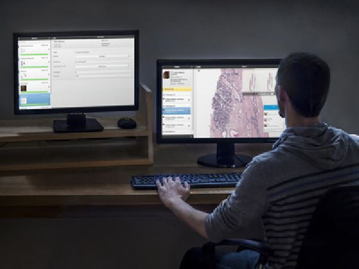

VNA
RADIOLOGÍA
PACS-RIS

PATOLOGÍA DIGITAL
Dicomizador vendor neutral
GENÓMICA CLÍNICA
NGS - VCF
FARMACO-GENÓMICA
Interacciones

BIG DATA ANALYTICS
e Informado

In situ o en la nube
Código abierto y estándares
via APIs
Inteligencia Artificial Flexible
y algortimos de terceros
Via navegador HTML5,
en cualquier dispositivo
Plataforma Enterprise de Contenido Clínico centrado en el paciente que facilita la coordinación de atención médica, reduce las carencias y facilita la prevención.
Mejorando los resultados sanitarios facilitando una conexión fluída entre diversas tecnologías:
Las Organizaciones de prestación sanitaria (HDOs) en todo el mundo están aumentando sus inversiones en tecnologías de secuenciación genómica, radiología multimodal, y patología digital, tanto para apoyar su misión de atención clínica como de promover la investigación en medicina personalizada.
Estas pruebas, dispositivos y sistemas producen terabytes y con frecuencia petabytes de datos estructurados y no estructurados, DICOM y no DICOM, imágenes y videos, metadatos e informes textuales. Esos datos tienen que ser almacenados, integrados y procesados en una plataforma que permita la búsqueda, visualización, anotación y colaboración, con el fin de ser útiles para fines clínicos y de investigación.
Hasta ahora, las HDOs se han basado en sistemas autónomos individuales (PACS, VNA, Patología Digital, Bioinformática, Farmacogenómica y Herramientas de Analytics) para administrar todos esos datos. Con la Plataforma de Kanteron Systems los médicos e investigadores de HDOs finalmente puede emplear un sistema modular unificado que:
Via los siguientes MÓDULOS:
Esto permite a las HDOs hacer crecer su negocio ofreciendo un alto valor de servicios adicionales, tales como la teleconsulta patología a los mercados rurales o internacionales y cócteles de tratamiento personalizado del cáncer. La Plataforma de Kanteron Systems también puede aumentar la productividad de sus grupos interdepartamentales como las juntas de tumores en un 40%, reducir la repetición innecesaria de pruebas a pacientes de 25% a prácticamente 0, acelerar el descubrimiento de patrones a través de análisis con GUI simplificada que incluyen no sólo los datos y metadatos, sino también los informes (lo que conduce a la reducción de costos y readmisión de pacientes, y la optimización del flujo de trabajo clínico), a la vez que aumenta la calidad y la rapidez de la atención incluso teniendo en cuenta planes de prevención y bienestar basados en la evidencia.
Las capacidades únicas e innovaciones revolucionarias de Kanteron Systems ya las emplean algunos de los más grandes de HDOs el mundo gracias a la Plataforma de Kanteron Systems.
La Plataforma de Kanteron Systems permite la integración de todas las imágenes médicas (DICOM: CT, MR, PET, DR, etc), onda (US, EEG, ECG, etc), no DICOM (patología WSI, fotografía dermatológica y forense, video de quirófano, etc) incluso la visualización de los datos genómicos, en cualquier formato de cualquier proveedor (DICOM, tiff, jpeg, pdf, avi, mov, svs, scn, vms, vmu, etc) en cualquier historial médico electrónico y servidor de imágenes PACS pre-existente (¡o el nuestro incorporado!), al convertirlos en objetos estándar DICOM.
La Plataforma de Kanteron Systems consta de un robusto PACS-VNA, visualizador, dicomizador, servidor de lista de trabajo, y RIS. Es la solución de gestión, flujo de trabajo, y almacenamiento de imagen perfecta para grandes instituciones y redes de atención sanitaria. Una solución en la que puede confiar: software GPL de código abierto y estándar 100% (ilimitado – sin restricciones).
Acceda a todas las imágenes desde estaciones de diagnóstico, historiales médicos electrónicos, PACS … incluso desde un navegador web (HTML5 Responsive Design, por lo que se adapta a tablets, teléfonos inteligentes … ¡cualquier pantalla!), de un modo seguro (HIPPA), desde cualquier lugar, 24 / 7. Con una robusta arquitectura que incluso soporta GPFS, GlusterFS y Ceph.
Piense en la Plataforma de Kanteron Systems como un SuperPACS + VNA + RIS + Flujo de trabajo de imagen de patología digital + Gestión de datos genómicos, farmacogenómicos y biosensores + WorkList Server + Visor online… ¡todo con un mismo interfaz y acceso!
Con la Plataforma de Kanteron Systems:
¿Cómo? ¿Qué significa todo esto para el paciente, el médico, el investigador y el hospital?
La Plataforma de Kanteron Systems es un sistema de información capaz de gestionar las áreas de Radiología, Patología, y Genómica de un Hospital (o red de hospitales), asignando recursos y disponibilidades a cada una de ellas. De esta forma, se permite la interrelación de todos los datos de un modo eficiente y sencillo, facilitando así la gestión eficaz de un centro hospitalario (o red), con independencia de su tamaño (ya que es software libre, sin licencias restrictivas).
La Plataforma de Kanteron Systems ha sido desarrollada 100% por Kanteron Systems, siguiendo las directrices y requisitos de clientes y expertos, con la finalidad de simplificar la recogida de datos y permitir la interconexión de los mismos, recogiéndose y cruzándose toda la información de sólo unas bases de datos (en lenguajes estándar). Todo esto se realiza a través de un interfaz de trabajo homogéneo e intuitivo, simplificando el proceso de aprendizaje de la herramienta.
La integración de todas las imágenes y los metadatos a través dicomización (radiología y patología) o dicom wrapping (genómica , ya que no existe un estándar DICOM para este campo) permite big data analytics.
Formado por una serie de módulos y componentes estándar, se trata de un sistema altamente configurable y adaptable.
Características básicas
REGISTRO EMPRESARIAL:
SÍGUENOS